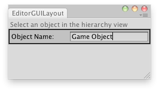

EditorGUILayout.TextField
public static string TextField(string text,
params GUILayoutOption[] options);
public static string TextField(string label,
string text,
params GUILayoutOption[] options);
public static string TextField(string label,
string text,
GUIStyle style,
params GUILayoutOption[] options);
public static string TextField(GUIContent label,
string text,
GUIStyle style,
params GUILayoutOption[] options);
Parameters
| label | Optional label to display in front of the text field. | |
| text | The text to edit. | |
| style | Optional GUIStyle. | |
| options | An optional list of layout options that specify extra layout properties. Any values passed in here will override settings defined by the style.See Also: GUILayout.Width, GUILayout.Height, GUILayout.MinWidth, GUILayout.MaxWidth, GUILayout.MinHeight, GUILayout.MaxHeight, GUILayout.ExpandWidth, GUILayout.ExpandHeight. |
Returns
string The text entered by the user.
Description 描述
Make a text field.
This works just like GUILayout.TextField, but correctly responds to select all, copy, paste etc. in the editor,
and it can have an optional label in front.

Changes the name of the selected GameObject.
// Automatically change the name of the selected object via a text field using UnityEditor; using UnityEngine;
public class EditorGUILayoutTextField : EditorWindow { [MenuItem("Examples/GUILayout TextField")] static void Init() { EditorWindow window = GetWindow(typeof(EditorGUILayoutTextField)); window.Show(); }
void OnGUI() { GUILayout.Label("Select an object in the hierarchy view"); if (Selection.activeGameObject) Selection.activeGameObject.name = EditorGUILayout.TextField("Object Name: ", Selection.activeGameObject.name); this.Repaint(); } }